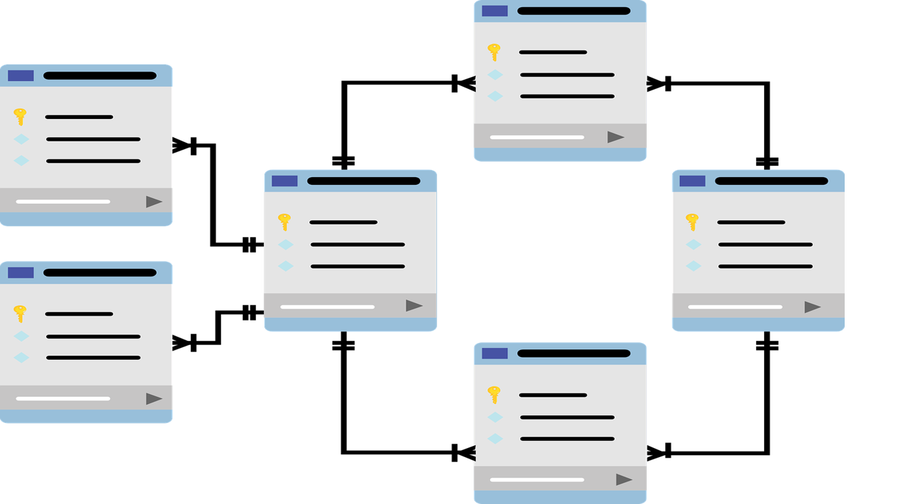
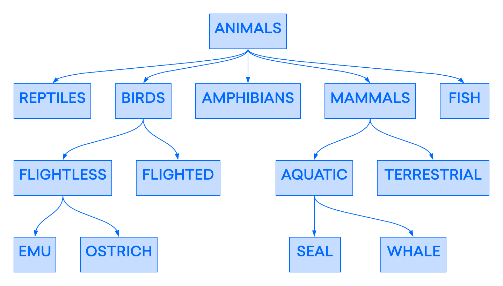

Bases de Datos SQL

Una base de datos relacional es un tipo de base de datos que almacena y proporciona acceso a puntos de
datos relacionados entre sí. Las bases de datos relacionales se basan en el modelo relacional, una forma
intuitiva y directa de representar datos en tablas. En una base de datos relacional, cada fila de la
tabla es un registro con un ID único llamado clave. Las columnas de la tabla contienen atributos de los
datos, y cada registro generalmente tiene un valor para cada atributo, lo que facilita el
establecimiento de las relaciones entre los puntos de datos.
El modelo relacional significa que las estructuras lógicas de datos—las tablas de datos, vistas e
índices—están separadas de las estructuras físicas de almacenamiento. Esta separación significa que los
administradores de bases de datos pueden administrar el almacenamiento físico de datos sin afectar el
acceso a esos datos como una estructura lógica. Por ejemplo, cambiar el nombre de un archivo de base de
datos no cambia el nombre de las tablas almacenadas en él.
La distinción entre lógica y física también se aplica a las operaciones de la base de datos, que son
acciones claramente definidas que permiten a las aplicaciones manipular los datos y las estructuras de
la base de datos. Las operaciones lógicas permiten que una aplicación especifique el contenido que
necesita, mientras que las operaciones físicas determinan cómo se debe acceder a esos datos y luego
realizan la tarea.
Para garantizar que los datos sean siempre precisos y accesibles, las bases de datos relacionales siguen
ciertas reglas de integridad. Por ejemplo, una regla de integridad puede especificar que no se permitan
filas duplicadas en una tabla, para eliminar la posibilidad de que ingrese información errónea en la
base de datos.
Entre los gestores de bases de datos SQL mas conocidas tenemos:
- MySQL
- MariaDB
- SQLite
- PostgreSQL
- Microsoft SQL Server
Las bases de datos SQL disponen de una serie de ventajas que las han convertido en el tipo de base de
datos más utilizada. Las principales ventajas son:
- Dispone de herramientas que permiten evitar la duplicidad de registros, garantizando
la integridad referencial (al eliminarse un registro, se eliminan todos los registros
relacionados dependientes del mismo).
- Tienen un mayor soporte al llevar mucho tiempo en el mercado (mayor comunidad, aplicaciones y
complementos).
- Atomicidad de la información. Al realizar cualquier operación en la base de datos, si surge
algún problema, la operación no se realiza.
- Dispone de un sistema estándar bien definido (SQL) para las operaciones con la base de datos,
como inserción, actualización o consultas. Este sistema es sencillo de comprender ya que se
adapta al lenguaje común.
Bases de Datos NO-SQL

Una base de datos NoSQL o Not Only SQL es una base de datos no relacional que no cuenta con un
identificador que relacione un conjunto de datos con otro. En las bases de datos No SQL la información
es organizada generalmente como documentos y no requieren que los datos están estructurados para poder
manipularlos.
Entre los gestores de bases de datos NO-SQL mas conocidas tenemos:
- MongoDB
- Apache Cassandra
- CouchDB
- Redis
- Neo4j
Las principales ventajas de las bases de datos no relacionales NoSQL son:
- Son bases de datos versátiles que permiten agregar información o hacer cambios en el sistema sin
necesidad de agregar configuraciones extras.
- Las bases de datos NoSQL open source no requieren del pago de licencia y no necesitan un hardware
muy potente para poder ser ejecutadas.
- Soportan el crecimiento horizontal, es decir, al soportar estructuras distribuidas se pueden
instalar nuevos nodos operativos que balancean la carga de trabajo. Es más fácil su expansión debido
a este escalado horizontal.
- Permiten guardar datos de cualquier tipo, en cualquier momento, sin requerir una verificación.
- Realizan consultas utilizando JSON (JavaScript Object Notation, formato sencillo de intercambio de
texto).
Los tipos de bases de datos NO-SQL son:
- Bases de datos de valores clave: las bases de datos NoSQL de valor-clave hacen hincapié en la
simplicidad y son muy útiles para acelerar una aplicación que admita el procesamiento de alta
velocidad de lectura y escritura de datos no transaccionales. Los valores almacenados pueden ser
cualquier tipo de objeto binario (texto, video, documento JSON, etc.) y se accede a través de una
clave. La aplicación tiene control total sobre lo que se almacena en el valor, convirtiéndolo en el
modelo NoSQL más flexible. Los datos se comparten y se replican en un clúster para obtener
escalabilidad y disponibilidad. Por esta razón, las bases de datos de valores clave a menudo no
admiten transacciones. Sin embargo, son muy eficaces en aplicaciones de escala que se ocupan de
datos de alta velocidad y no transaccionales.
- Base de datos de documentos: Las bases de datos de documentos suelen almacenar documentos JSON, XML
y BSON. Son similares a las bbdd de valores clave, pero en este caso, un valor es un solo documento
que almacena todos los datos relacionados con una clave específica. Los campos populares del
documento pueden indexarse para proporcionar una recuperación rápida sin conocer la clave. Cada
documento puede tener la misma estructura o una estructura diferente.
- Bases de datos de columnas anchas: Las bases de datos NoSQL de columnas anchas almacenan datos en
tablas con filas y columnas similares a las BBDD relacionales, pero los nombres y los formatos de
las columnas pueden variar de fila a fila en la tabla. Las columnas de columnas anchas agrupan
columnas de datos relacionados juntos. Una consulta puede recuperar datos relacionados en una sola
operación porque sólo se recuperan las columnas asociadas con la consulta. En una BBDD, los datos
estarían en diferentes filas almacenadas en diferentes lugares del disco, requiriendo múltiples
operaciones de disco para su recuperación.
- Bases de datos de grafos: una base de datos de grafos utiliza estructuras de grafos para almacenar,
correlacionar y consultar relaciones. Proporcionan una adyacencia libre de índice, de modo que los
elementos adyacentes se unen entre sí sin usar un índice.
Las bases de datos multimodales aprovechan alguna combinación de los cuatro tipos descritos
anteriormente y, por lo tanto, pueden soportar una gama más amplia de aplicaciones.